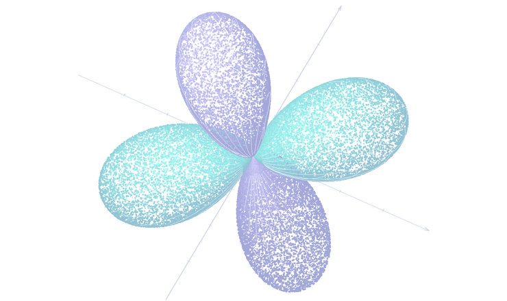
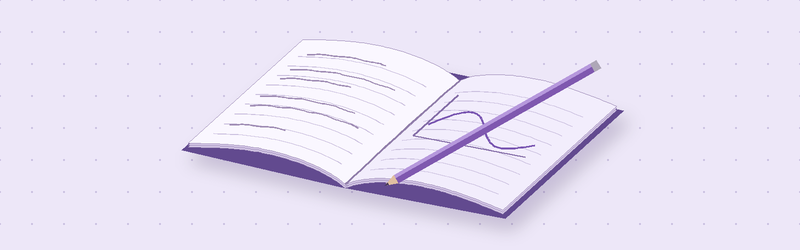

Singularity Lab
Study Assistant Pro
Plan your study, explore atomic orbitals, and run physics experiments in one workspace.

3dₓᵧ orbitalLearning workspaces

Independent learning
Study desk
Organize tasks, review flashcards, and track your progress.

Chemistry
Periodic table
Explore 118 elements, their orbitals, and ground-state exceptions.

Physics
Physics Atlas
Run 34 interactive labs, change variables, and test predictions.